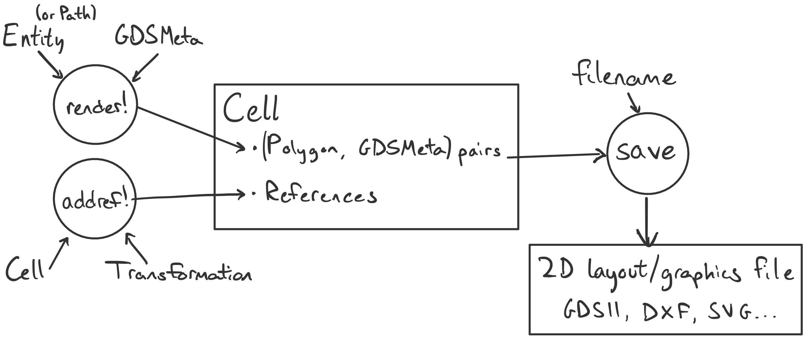
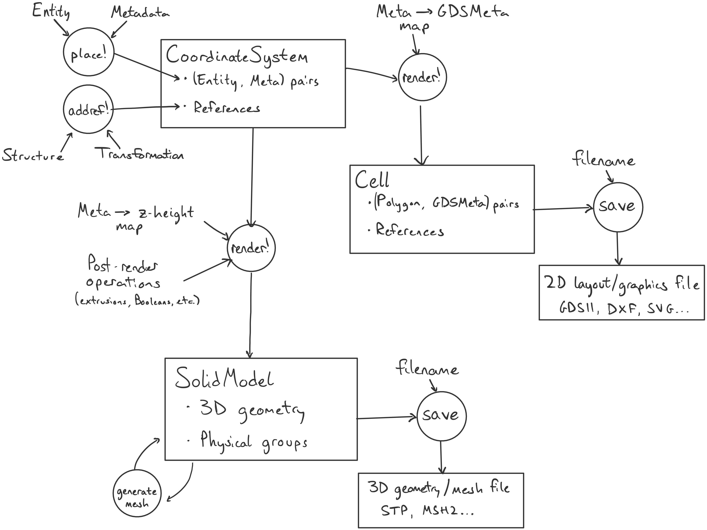
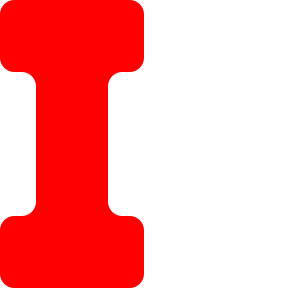
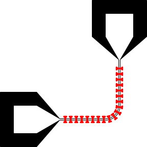
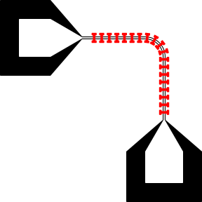
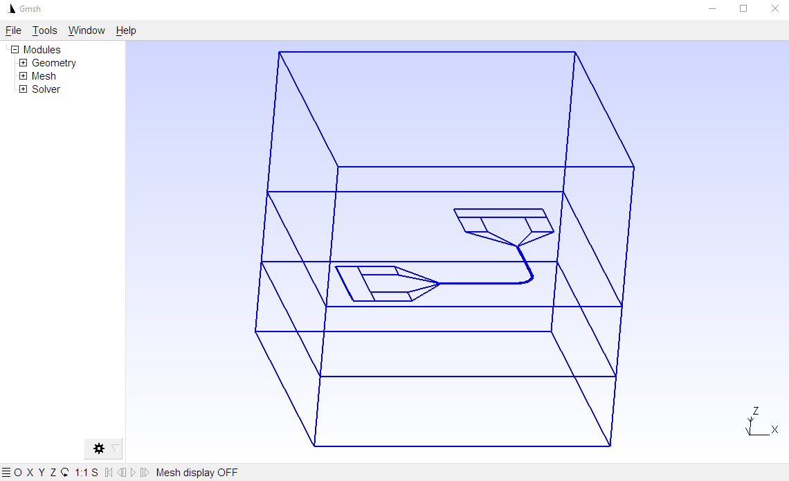
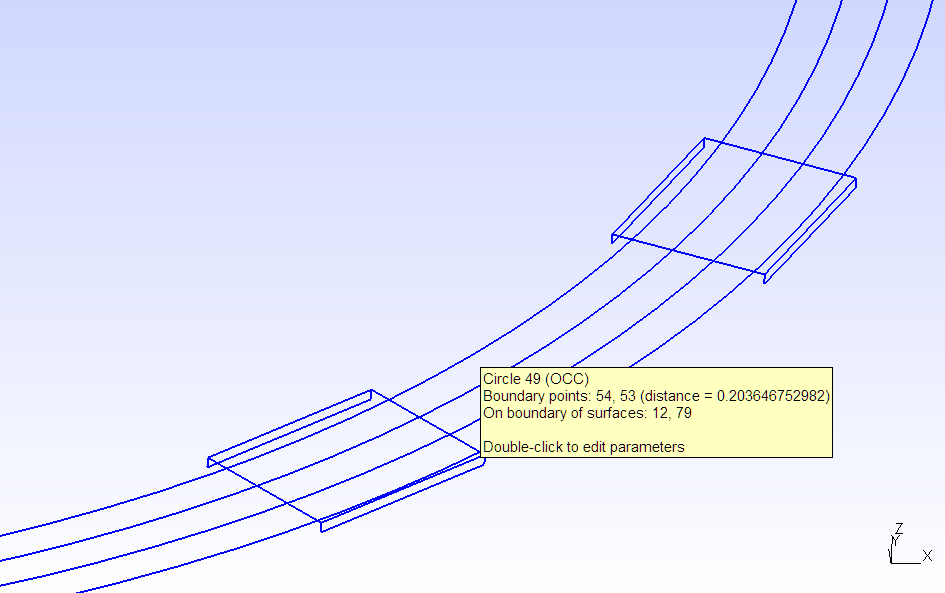
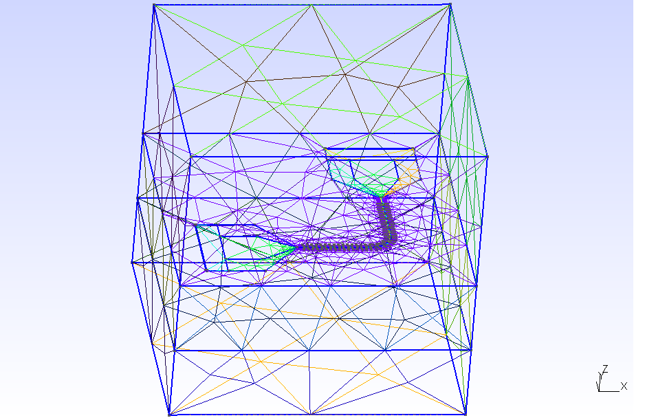
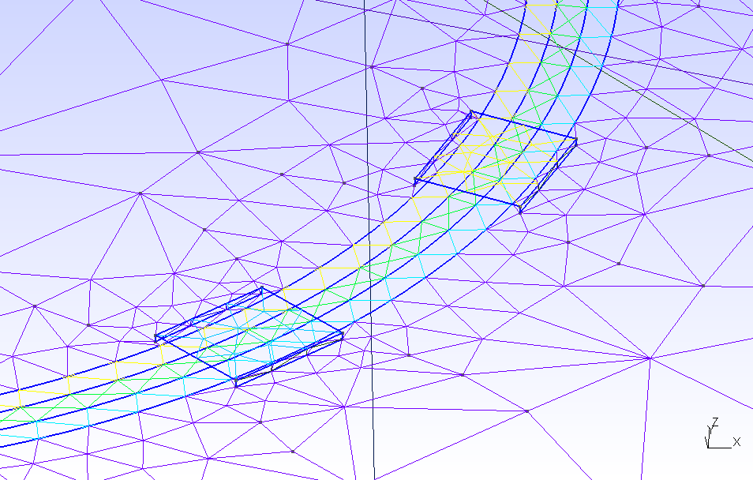
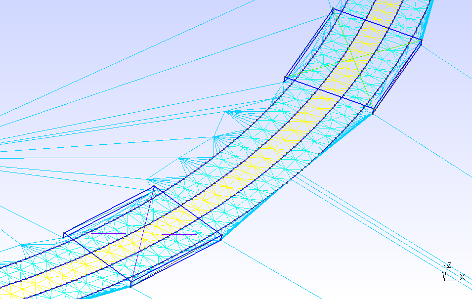

Geometry
DeviceLayout.jl lets you define 2D shapes, place shapes in structures, and place references to structures inside other structures. We call this workflow "geometry-level layout", the most basic way of interacting with DeviceLayout.jl. This page explains the main abstract types used for geometry representation, as well as the standard flow of geometry-level layout with a concrete example.
Geometry representation
Within the DeviceLayout.jl type hierarchy, "shapes" are GeometryEntity subtypes like Polygon and Rectangle.
"Structures" are GeometryStructure subtypes like Cell, CoordinateSystem, Path, and Component. A structure can contain many entities (its "elements"), and it associates each entity with its own piece of metadata (generally specifying the "layer" that entity belongs to).
Structures may also contain references to other structures. The most common GeometryReference subtype, StructureReference, wraps a structure together with a coordinate transformation that specifies its relative positioning and orientation within the containing structure.
Here's a type hierarchy with the most important types for geometry representation:
AbstractGeometry{S<:Coordinate}
├── GeometryEntity (basic "shapes")
│ ├── Polygon, Rectangle, Text, Ellipse...
│ ├── ClippedPolygon (result of polygon [clipping](./polygons.md#Clipping) — `union2d`, etc.)
│ ├── Paths.Node (one segment+style pair in a Path)
│ └── StyledEntity (entity + rounding or other rendering customization)
├── GeometryStructure (can contain entities & references)
│ ├── AbstractComponent (parameterized geometry for schematic-driven design)
│ │ └── Path (specialized for curved traces)
│ └── AbstractCoordinateSystem (container for entities and references)
│ ├── CoordinateSystem (for low-level geometry)
│ ├── Cell (for GDS output)
│ └── Schematic (for high-level device design)
└── GeometryReference
├── StructureReference
└── ArrayReferenceNote that Point{T} <: StaticArrays.FieldVector{2,T} is not an AbstractGeometry subtype (see Points).
AbstractGeometry
An AbstractGeometry{T} subtype uses the coordinate type T for its geometry data. It has a bounding box and associated methods (bounds, lowerleft, upperright, center). It also supports the transformation interface, including the alignment interface. The important subtypes are GeometryEntity, GeometryStructure, and GeometryReference.
See API Reference: AbstractGeometry.
Entities
Entities are "simple" geometric elements. Entity subtypes include AbstractPolygon (Polygon and Rectangle) and the individual pieces ("nodes") of a Path.
An entity can be associated with a single piece of metadata. Entities can comprise multiple disjoint shapes, as in a Paths.Node with a CPW style, or a ClippedPolygon representing the union of disjoint polygons. Even in that case, all shapes in an entity must be in the same layer.
In addition to the AbstractGeometry interface (bounds and transformations), a GeometryEntity implements to_polygons, returning a Polygon or vector of Polygons.
Entity Styles
Entities can also be "styled" by pairing them with a GeometryEntityStyle. This creates a StyledEntity <: GeometryEntity that still supports the entity interface (including the ability to be styled):
# Mesh sizing for simulation
meshsized_sty = MeshSized(5μm)
rect_meshsized = meshsized_sty(Rectangle(50μm, 20μm))
# Rounded corners
rounded_sty = Rounded(5μm)
rect_rounded = rounded_sty(Rectangle(50μm, 20μm))
# Both
rect_rounded_meshsized = meshsized_sty(rect_rounded)Some styles, like MeshSized, can be used with any entity to supply additional rendering directives. The Plain style does nothing, and the NoRender style prevents rendering; others control rendering tolerance, mesh sizing, and toggles for other styles based on global rendering options.
AbstractPolygons have the special Rounded style, and ClippedPolygons can have a StyleDict applying different styles to different contours.
Structures
Structures are "composite" geometric objects, containing any number of GeometryEntity elements and their metadata, accessed with the elements and element_metadata methods. They can also contain references to other structures, accessed with refs. Structures also have a name and can be flattened into an equivalent single structure without references. Metadata can be recursively changed in-place with map_metadata! or in a copy with map_metadata. The type parameter of a GeometryStructure determines the coordinate type of its elements.
Important structure subtypes include CoordinateSystem and Cell, Path, and Component.
See API Reference: Structures.
Unique Names
It's generally desirable to give unique names to distinct structures. In particular, the GDSII format references cells by name, leading to errors or undefined behavior if different cells have the same name. The uniquename function makes it possible to ensure unique names on a per-Julia-session basis or until reset_uniquename! resets the name counter. Structures that are not constructed directly by the user will generally have names generated by uniquename. GDSWriterOptions also provides a rename_duplicates option to automatically use unique names when saving a Cell to GDS.
Metadata
The layer of an element in a structure is stored as a DeviceLayout.Meta object ("element metadata"). GDSMeta stores integer values for layer and datatype, while SemanticMeta stores a layer name as a Symbol as well as integer values for level and index.
References
The main GeometryReference subtype is StructureReference, which points to a structure together with a transformation that positions it relative to the structure holding the reference. An ArrayReference also contains parameters specifying a 2d grid of instantiations of the referenced structure. The methods sref and aref are convenient for creating StructureReferences and ArrayReferences, respectively. The transformation and structure can be accessed with the transformation and structure methods.
If a structure s contains a reference r somewhere in its reference hierarchy, we can use transformation(s, r) to find the total transformation of that reference relative to the top-level structure.
As with structures, a reference can also be flattened into a structure with all elements at the top level and no references.
For convenience, you can get referenced structures by indexing their parent with the structure name, as in cs["referenced_cs"]["deeper_cs"].
See API Reference: References.
Geometry-level layout
To be more concrete, let's take a look at some examples that showcase different geometry-level workflows. It may be easier to understand the flow of data by starting with a diagram. Here's one for the "hello world" workflow, working directly with Cells:

And here's a diagram for the more typical CoordinateSystem workflow:

We'll demonstrate each of these below.
Entities: Transformations, Clipping, Styles
Starting with a rectangle, let's demonstrate transformations, polygon clipping, and a style.
using DeviceLayout, DeviceLayout.PreferredUnits
using FileIO # You will have to add FileIO to the environment if you haven't already
r = centered(Rectangle(20μm, 40μm))
# Create a second rectangle rotated by 90 degrees, positioned below the first
r2 = Align.below(Rotation(90°)(r), r, centered=true) # centered in x-coordinate
r3 = Align.above(r2, r) # Another copy of r2 above the first rectangle
dogbone = union2d([r, r2, r3]) # Boolean union of the three rectangles as a single entity
rounded_dogbone = Rounded(4μm)(dogbone) # Apply the Rounded styleDeviceLayout.StyledEntity{Unitful.Quantity{Float64, 𝐋, Unitful.ContextUnits{(μm,), 𝐋, Unitful.FreeUnits{(nm,), 𝐋, nothing}, nothing}}, ClippedPolygon{Unitful.Quantity{Float64, 𝐋, Unitful.ContextUnits{(μm,), 𝐋, Unitful.FreeUnits{(nm,), 𝐋, nothing}, nothing}}}, Rounded{Unitful.Quantity{Float64, 𝐋, Unitful.ContextUnits{(μm,), 𝐋, Unitful.FreeUnits{(nm,), 𝐋, nothing}, nothing}}}}(ClippedPolygon{Unitful.Quantity{Float64, 𝐋, Unitful.ContextUnits{(μm,), 𝐋, Unitful.FreeUnits{(nm,), 𝐋, nothing}, nothing}}}(Top-level PolyNode with 1 immediate children.), Rounded{Unitful.Quantity{Float64, 𝐋, Unitful.ContextUnits{(μm,), 𝐋, Unitful.FreeUnits{(nm,), 𝐋, nothing}, nothing}}}(4.0 μm, 0.0, 4.0 μm, 0.001, Point{Unitful.Quantity{Float64, 𝐋, Unitful.ContextUnits{(μm,), 𝐋, Unitful.FreeUnits{(nm,), 𝐋, nothing}, nothing}}}[], false, Inf μm))The printed output above is a bit hard to read, and it's not necessary to understand it in detail to get started. The most important information here is that rounded_dogbone is a certain kind of GeometryEntity that only describes the vertices of the dogbone polygon and the rounding radius—in particular, we have not discretized the rounded corners to represent the result as a polygon. In more detail, rounded_dogbone is a StyledEntity{T,U,S} with three type parameters: the coordinate type T = typeof(1.0μm), the underlying entity type U = ClippedPolygon{T}, and the style S = Rounded{T}—that is, it is a GeometryEntity that composes the result of a polygon clipping (Boolean) operation with a GeometryEntityStyle specifying rules for rounding that entity.
Cells and Rendering
The simplest workflow for generating 2D layouts is to render entities directly to a Cell. That's why we used it for the "hello world" example.
The Cell abstraction is meant to correspond to the GDSII backend, which uses Polygon as its only primitive entity type. In other words, rendering a complicated entity like our rounded_dogbone to a Cell will convert it to a Polygon representation of the same shape—just a list of points.
By default, render!(::Cell, ...) discretizes a Rounded curve with absolute tolerance of 1nm—that's the furthest any point on the true curve is from any line segment on the discretized version. This can be controlled in different ways, like providing the atol keyword to render!, or by composing the ToTolerance style on top of the Rounded style. Internally, an atol keyword then gets passed to the method to_polygons(::AbstractPolygon{S}, ::Rounded{T}; kwargs...).
cr = Cell("dogbone", nm)
render!(cr, rounded_dogbone, GDSMeta(1))
elements(cr)1-element Vector{Polygon{Unitful.Quantity{Float64, 𝐋, Unitful.ContextUnits{(nm,), 𝐋, Unitful.FreeUnits{(nm,), 𝐋, nothing}, nothing}}}}:
Polygon{Unitful.Quantity{Float64, 𝐋, Unitful.ContextUnits{(nm,), 𝐋, Unitful.FreeUnits{(nm,), 𝐋, nothing}, nothing}}}(Point{Unitful.Quantity{Float64, 𝐋, Unitful.ContextUnits{(nm,), 𝐋, Unitful.FreeUnits{(nm,), 𝐋, nothing}, nothing}}}[(-16000.0 nm,-20000.0 nm), (-16174.477549 nm,-20003.807114 nm), (-16348.622971 nm,-20015.221208 nm), (-16522.104768999998 nm,-20034.220555 nm), (-16694.592710999998 nm,-20060.768988 nm), (-16865.758456 nm,-20094.815972 nm), (-17035.27618 nm,-20136.296694999997 nm), (-17202.823198000002 nm,-20185.132197000003 nm), (-17368.080573 nm,-20241.229517 nm), (-17530.733729 nm,-20304.48187 nm) … (-12469.266271 nm,-19695.51813 nm), (-12631.919426999999 nm,-19758.770483 nm), (-12797.176802 nm,-19814.867802999997 nm), (-12964.72382 nm,-19863.703305000003 nm), (-13134.241544 nm,-19905.184028 nm), (-13305.407288999999 nm,-19939.231012 nm), (-13477.895231 nm,-19965.779445 nm), (-13651.377029000001 nm,-19984.778792 nm), (-13825.522450999999 nm,-19996.192886 nm), (-14000.0 nm,-20000.0 nm)])Our Rounded ClippedPolygon has been reduced to a mere Polygon, as necessary to represent it within the GDSII format. It's also what we need in order to use the SVG backend:
save("dogbone.svg", cr; layercolors=Dict(0 => (0, 0, 0, 1), 1 => (1, 0, 0, 1)));
Our ClippedPolygon isn't doing anything special, here—it might as well be a Polygon in this example. The ClippedPolygon type mainly exists to represent polygons with holes without having to generate "keyhole" polygons as required by the GDSII format. This ends up being convenient for other backends that don't want keyhole polygons as well as for applying different styles to different boundary or hole contours.
Paths and References
We can now create references to our cell, place those references in a structure, and render the whole structure to another cell. Let's do that with a Path, which is a GeometryStructure where references can be positioned along the path with attach!:
cref = sref(cr, Point(0.0μm, 0.0μm)) # sref is short for "structure [or single] reference"
p = Path(μm, metadata=GDSMeta())
sty = launch!(p)
straight!(p, 500μm, sty)
turn!(p, π / 2, 150μm)
straight!(p, 500μm)
launch!(p)
turnidx = Int((length(p) + 1) / 2) - 1 # the first straight segment of the path
simplify!(p, turnidx .+ (0:2)) # Make the straight-turn-straight a single segment
attach!(p, cref, (60μm):(60μm):((pathlength(p[turnidx])) - 60μm), i=turnidx)
c = Cell("decoratedpath", nm)
render!(c, p)
refs(c)19-element Vector{DeviceLayout.GeometryReference{S, T} where {S, T<:DeviceLayout.Cells.AbstractCell}}:
CellReference{Unitful.Quantity{Float64, 𝐋, Unitful.ContextUnits{(nm,), 𝐋, Unitful.FreeUnits{(nm,), 𝐋, nothing}, nothing}}, Cell{Unitful.Quantity{Float64, 𝐋, Unitful.ContextUnits{(nm,), 𝐋, Unitful.FreeUnits{(nm,), 𝐋, nothing}, nothing}}}}(Cell "dogbone" with 1 els, 0 refs, (1.15e6 nm,554380.5509807655 nm), false, 1.0, 1.5707963267948966)
CellReference{Unitful.Quantity{Float64, 𝐋, Unitful.ContextUnits{(nm,), 𝐋, Unitful.FreeUnits{(nm,), 𝐋, nothing}, nothing}}, Cell{Unitful.Quantity{Float64, 𝐋, Unitful.ContextUnits{(nm,), 𝐋, Unitful.FreeUnits{(nm,), 𝐋, nothing}, nothing}}}}(Cell "dogbone" with 1 els, 0 refs, (1.15e6 nm,494380.55098076555 nm), false, 1.0, 1.5707963267948966)
CellReference{Unitful.Quantity{Float64, 𝐋, Unitful.ContextUnits{(nm,), 𝐋, Unitful.FreeUnits{(nm,), 𝐋, nothing}, nothing}}, Cell{Unitful.Quantity{Float64, 𝐋, Unitful.ContextUnits{(nm,), 𝐋, Unitful.FreeUnits{(nm,), 𝐋, nothing}, nothing}}}}(Cell "dogbone" with 1 els, 0 refs, (1.15e6 nm,434380.55098076555 nm), false, 1.0, 1.5707963267948966)
CellReference{Unitful.Quantity{Float64, 𝐋, Unitful.ContextUnits{(nm,), 𝐋, Unitful.FreeUnits{(nm,), 𝐋, nothing}, nothing}}, Cell{Unitful.Quantity{Float64, 𝐋, Unitful.ContextUnits{(nm,), 𝐋, Unitful.FreeUnits{(nm,), 𝐋, nothing}, nothing}}}}(Cell "dogbone" with 1 els, 0 refs, (1.15e6 nm,374380.55098076555 nm), false, 1.0, 1.5707963267948966)
CellReference{Unitful.Quantity{Float64, 𝐋, Unitful.ContextUnits{(nm,), 𝐋, Unitful.FreeUnits{(nm,), 𝐋, nothing}, nothing}}, Cell{Unitful.Quantity{Float64, 𝐋, Unitful.ContextUnits{(nm,), 𝐋, Unitful.FreeUnits{(nm,), 𝐋, nothing}, nothing}}}}(Cell "dogbone" with 1 els, 0 refs, (1.15e6 nm,314380.55098076555 nm), false, 1.0, 1.5707963267948966)
CellReference{Unitful.Quantity{Float64, 𝐋, Unitful.ContextUnits{(nm,), 𝐋, Unitful.FreeUnits{(nm,), 𝐋, nothing}, nothing}}, Cell{Unitful.Quantity{Float64, 𝐋, Unitful.ContextUnits{(nm,), 𝐋, Unitful.FreeUnits{(nm,), 𝐋, nothing}, nothing}}}}(Cell "dogbone" with 1 els, 0 refs, (1.15e6 nm,254380.55098076552 nm), false, 1.0, 1.5707963267948966)
CellReference{Unitful.Quantity{Float64, 𝐋, Unitful.ContextUnits{(nm,), 𝐋, Unitful.FreeUnits{(nm,), 𝐋, nothing}, nothing}}, Cell{Unitful.Quantity{Float64, 𝐋, Unitful.ContextUnits{(nm,), 𝐋, Unitful.FreeUnits{(nm,), 𝐋, nothing}, nothing}}}}(Cell "dogbone" with 1 els, 0 refs, (1.15e6 nm,194380.55098076552 nm), false, 1.0, 1.5707963267948966)
CellReference{Unitful.Quantity{Float64, 𝐋, Unitful.ContextUnits{(nm,), 𝐋, Unitful.FreeUnits{(nm,), 𝐋, nothing}, nothing}}, Cell{Unitful.Quantity{Float64, 𝐋, Unitful.ContextUnits{(nm,), 𝐋, Unitful.FreeUnits{(nm,), 𝐋, nothing}, nothing}}}}(Cell "dogbone" with 1 els, 0 refs, (1.1491875105902583e6 nm,134408.76259299737 nm), false, 1.0, 1.4666666666666668)
CellReference{Unitful.Quantity{Float64, 𝐋, Unitful.ContextUnits{(nm,), 𝐋, Unitful.FreeUnits{(nm,), 𝐋, nothing}, nothing}}, Cell{Unitful.Quantity{Float64, 𝐋, Unitful.ContextUnits{(nm,), 𝐋, Unitful.FreeUnits{(nm,), 𝐋, nothing}, nothing}}}}(Cell "dogbone" with 1 els, 0 refs, (1.1313392829715037e6 nm,77543.1663089585 nm), false, 1.0, 1.0666666666666669)
CellReference{Unitful.Quantity{Float64, 𝐋, Unitful.ContextUnits{(nm,), 𝐋, Unitful.FreeUnits{(nm,), 𝐋, nothing}, nothing}}, Cell{Unitful.Quantity{Float64, 𝐋, Unitful.ContextUnits{(nm,), 𝐋, Unitful.FreeUnits{(nm,), 𝐋, nothing}, nothing}}}}(Cell "dogbone" with 1 els, 0 refs, (1.0927554704604605e6 nm,32116.910883457793 nm), false, 1.0, 0.6666666666666667)
CellReference{Unitful.Quantity{Float64, 𝐋, Unitful.ContextUnits{(nm,), 𝐋, Unitful.FreeUnits{(nm,), 𝐋, nothing}, nothing}}, Cell{Unitful.Quantity{Float64, 𝐋, Unitful.ContextUnits{(nm,), 𝐋, Unitful.FreeUnits{(nm,), 𝐋, nothing}, nothing}}}}(Cell "dogbone" with 1 els, 0 refs, (1.0395276086715303e6 nm,5301.803215415419 nm), false, 1.0, 0.2666666666666667)
CellReference{Unitful.Quantity{Float64, 𝐋, Unitful.ContextUnits{(nm,), 𝐋, Unitful.FreeUnits{(nm,), 𝐋, nothing}, nothing}}, Cell{Unitful.Quantity{Float64, 𝐋, Unitful.ContextUnits{(nm,), 𝐋, Unitful.FreeUnits{(nm,), 𝐋, nothing}, nothing}}}}(Cell "dogbone" with 1 els, 0 refs, (980000.0 nm,0.0 nm), false, 1.0, 0.0)
CellReference{Unitful.Quantity{Float64, 𝐋, Unitful.ContextUnits{(nm,), 𝐋, Unitful.FreeUnits{(nm,), 𝐋, nothing}, nothing}}, Cell{Unitful.Quantity{Float64, 𝐋, Unitful.ContextUnits{(nm,), 𝐋, Unitful.FreeUnits{(nm,), 𝐋, nothing}, nothing}}}}(Cell "dogbone" with 1 els, 0 refs, (920000.0 nm,0.0 nm), false, 1.0, 0.0)
CellReference{Unitful.Quantity{Float64, 𝐋, Unitful.ContextUnits{(nm,), 𝐋, Unitful.FreeUnits{(nm,), 𝐋, nothing}, nothing}}, Cell{Unitful.Quantity{Float64, 𝐋, Unitful.ContextUnits{(nm,), 𝐋, Unitful.FreeUnits{(nm,), 𝐋, nothing}, nothing}}}}(Cell "dogbone" with 1 els, 0 refs, (860000.0 nm,0.0 nm), false, 1.0, 0.0)
CellReference{Unitful.Quantity{Float64, 𝐋, Unitful.ContextUnits{(nm,), 𝐋, Unitful.FreeUnits{(nm,), 𝐋, nothing}, nothing}}, Cell{Unitful.Quantity{Float64, 𝐋, Unitful.ContextUnits{(nm,), 𝐋, Unitful.FreeUnits{(nm,), 𝐋, nothing}, nothing}}}}(Cell "dogbone" with 1 els, 0 refs, (800000.0 nm,0.0 nm), false, 1.0, 0.0)
CellReference{Unitful.Quantity{Float64, 𝐋, Unitful.ContextUnits{(nm,), 𝐋, Unitful.FreeUnits{(nm,), 𝐋, nothing}, nothing}}, Cell{Unitful.Quantity{Float64, 𝐋, Unitful.ContextUnits{(nm,), 𝐋, Unitful.FreeUnits{(nm,), 𝐋, nothing}, nothing}}}}(Cell "dogbone" with 1 els, 0 refs, (740000.0 nm,0.0 nm), false, 1.0, 0.0)
CellReference{Unitful.Quantity{Float64, 𝐋, Unitful.ContextUnits{(nm,), 𝐋, Unitful.FreeUnits{(nm,), 𝐋, nothing}, nothing}}, Cell{Unitful.Quantity{Float64, 𝐋, Unitful.ContextUnits{(nm,), 𝐋, Unitful.FreeUnits{(nm,), 𝐋, nothing}, nothing}}}}(Cell "dogbone" with 1 els, 0 refs, (680000.0 nm,0.0 nm), false, 1.0, 0.0)
CellReference{Unitful.Quantity{Float64, 𝐋, Unitful.ContextUnits{(nm,), 𝐋, Unitful.FreeUnits{(nm,), 𝐋, nothing}, nothing}}, Cell{Unitful.Quantity{Float64, 𝐋, Unitful.ContextUnits{(nm,), 𝐋, Unitful.FreeUnits{(nm,), 𝐋, nothing}, nothing}}}}(Cell "dogbone" with 1 els, 0 refs, (620000.0 nm,0.0 nm), false, 1.0, 0.0)
CellReference{Unitful.Quantity{Float64, 𝐋, Unitful.ContextUnits{(nm,), 𝐋, Unitful.FreeUnits{(nm,), 𝐋, nothing}, nothing}}, Cell{Unitful.Quantity{Float64, 𝐋, Unitful.ContextUnits{(nm,), 𝐋, Unitful.FreeUnits{(nm,), 𝐋, nothing}, nothing}}}}(Cell "dogbone" with 1 els, 0 refs, (560000.0 nm,0.0 nm), false, 1.0, 0.0)The entities making up the Path are rendered into Polygons, but the GeometryReferences stored in the Path are simply placed into our Cell as references, since they're already Cell references. Note that we have many references to the same Cell called "dogbone" here—it hasn't been copied.
If you're paying close attention, you might have noticed that Path handles entity metadata slightly differently than a GeometryStructure like Cell. The Path's elements—the launchers and CPW-styled segments—are all associated with a single piece of metadata, rather than allowing the possibility of different metadata for each. As a structure, though, the Path can still have references to other structures with all sorts of different metadata associated with their elements.
Let's see how it looks:
save("dogbone_path.svg", c; layercolors=Dict(0 => (0, 0, 0, 1), 1 => (1, 0, 0, 1)));
For further examples, we'll hide the line that saves to SVG just to display a cell.
We can also add Cell references directly to a Cell, for example to apply a global rotation:
c_wrapper = Cell("wrapper", nm)
addref!(c_wrapper, sref(c, rot=90°))
Coordinate Systems
We've been working with Cells in the above examples because they're convenient for displaying immediately, but in practice, you'll usually want to work with CoordinateSystem. The two are very similar—both are subtypes of AbstractCoordinateSystem—but where Cell is tied to the GDSII backend, CoordinateSystem is the "DeviceLayout.jl-native" geometry structure.
In particular, any GeometryEntity can be placed in a CoordinateSystem, like our rounded_dogbone from before. (If Polygon is the only Cell primitive, then every GeometryEntity is a CoordinateSystem primitive.) That way, backend-specific decisions about how to render it can be deferred. This will become clear when we get to the SolidModel backend below.
csr = CoordinateSystem("dogbone", nm)
place!(csr, rounded_dogbone, SemanticMeta(:bridge))
elements(csr)[1]DeviceLayout.StyledEntity{Unitful.Quantity{Float64, 𝐋, Unitful.ContextUnits{(nm,), 𝐋, Unitful.FreeUnits{(nm,), 𝐋, nothing}, nothing}}, ClippedPolygon{Unitful.Quantity{Float64, 𝐋, Unitful.ContextUnits{(nm,), 𝐋, Unitful.FreeUnits{(nm,), 𝐋, nothing}, nothing}}}, Rounded{Unitful.Quantity{Float64, 𝐋, Unitful.ContextUnits{(μm,), 𝐋, Unitful.FreeUnits{(nm,), 𝐋, nothing}, nothing}}}}(ClippedPolygon{Unitful.Quantity{Float64, 𝐋, Unitful.ContextUnits{(nm,), 𝐋, Unitful.FreeUnits{(nm,), 𝐋, nothing}, nothing}}}(Top-level PolyNode with 1 immediate children.), Rounded{Unitful.Quantity{Float64, 𝐋, Unitful.ContextUnits{(μm,), 𝐋, Unitful.FreeUnits{(nm,), 𝐋, nothing}, nothing}}}(4.0 μm, 0.0, 4.0 μm, 0.001, Point{Unitful.Quantity{Float64, 𝐋, Unitful.ContextUnits{(μm,), 𝐋, Unitful.FreeUnits{(nm,), 𝐋, nothing}, nothing}}}[], false, Inf μm))We added our entity to a CoordinateSystem with place! rather than render!. The different verb is meant to convey that the entity is added as-is rather than potentially converted to some other representation. For convenience, render! still works with CoordinateSystems, but it's just an alias for place!.
We're also free to use any type of metadata to describe layers, not just GDSMeta. In this case, we use SemanticMeta with the layer symbol :bridge.
You can do just about anything with a CoordinateSystem that you could do with a Cell, and some things you couldn't. For example, rendering a Path to a Cell converted it into Polygons—a Cell can only hold references to other Cells, not arbitrary structures. CoordinateSystem doesn't have that limitation:
csref = sref(csr, Point(0.0μm, 0.0μm))
p = Path(nm, metadata=SemanticMeta(:metal_negative))
sty = launch!(p, trace1=4μm, gap1=4μm)
straight!(p, 500μm, sty)
turn!(p, π / 2, 150μm)
straight!(p, 500μm)
launch!(p, trace1=4μm, gap1=4μm)
turnidx = Int((length(p) + 1) / 2) - 1 # the first straight segment of the path
simplify!(p, turnidx .+ (0:2))
attach!(p, csref, (60μm):(60μm):((pathlength(p[turnidx])) - 60μm), i=turnidx)
cs = CoordinateSystem("decoratedpath", nm)
addref!(cs, p) # either render! or place! would do the same thing here
refs(cs)1-element Vector{DeviceLayout.GeometryReference}:
StructureReference{Unitful.Quantity{Float64, 𝐋, Unitful.ContextUnits{(nm,), 𝐋, Unitful.FreeUnits{(nm,), 𝐋, nothing}, nothing}}, Path{Unitful.Quantity{Float64, 𝐋, Unitful.ContextUnits{(nm,), 𝐋, Unitful.FreeUnits{(nm,), 𝐋, nothing}, nothing}}}}(Path{Unitful.Quantity{Float64, 𝐋, Unitful.ContextUnits{(nm,), 𝐋, Unitful.FreeUnits{(nm,), 𝐋, nothing}, nothing}}}("path\$4", (-150000.0 nm,0.0 nm), 0.0°, SemanticMeta(:metal_negative, 1, 1), DeviceLayout.Paths.Node{Unitful.Quantity{Float64, 𝐋, Unitful.ContextUnits{(nm,), 𝐋, Unitful.FreeUnits{(nm,), 𝐋, nothing}, nothing}}}[2 segments styled as Open termination of CPW with width 300000.0 nm, gap 150000.0 nm, and rounding radius 5000.0 nm, Straight by 245000.0 nm styled as CPW with width 300000.0 nm and gap 150000.0 nm, Straight by 250000.0 nm styled as Tapered CPW with initial width 300000.0 nm and initial gap 150000.0 nm tapers to a final width 4000.0 nm and final gap 4000.0 nm, 3 segments styled as Compound style with 19 decorations, Straight by 250000.0 nm styled as Tapered CPW with initial width 4000.0 nm and initial gap 4000.0 nm tapers to a final width 300000.0 nm and final gap 150000.0 nm, Straight by 245000.0 nm styled as CPW with width 300000.0 nm and gap 150000.0 nm, 2 segments styled as Open termination of CPW with width 300000.0 nm, gap 150000.0 nm, and rounding radius 5000.0 nm], CoordinateSystem "cs_path$4" with 0 els, 0 refs), (0.0 nm,0.0 nm), false, 1.0, 0.0)Eventually, we'll still want to turn this into a Cell. Since we were using named SemanticMeta layers, we just need to specify how to convert them to GDSMeta:
layer_record = Dict(:bridge => GDSMeta(1), :metal_negative => GDSMeta())
cell = Cell(cs; map_meta=m -> layer_record[layer(m)])
# Could also say cell = render!(Cell("newcell", nm), cs; map_meta=...)Solid Models
We can also render the same CoordinateSystem to a 3D model. DeviceLayout.jl uses Open CASCADE Technology, an open-source 3D geometry library, through the API provided by Gmsh, a 3D finite element mesh generator.
See Concepts: Solid Models for more explanatory detail, and see API Reference: SolidModels for reference documentation.
Starting with purely 2D geometry, we can generate a SolidModel by providing a map from layer name to position in the third dimension (zmap) as well as a list of Booleans, extrusions, and other operations to perform after rendering the 2D entities (postrender_ops).
It's not really recommended to do this directly from geometry-level layout. There are tools in the schematic-driven layout interface that handle some of the complexity for you (see SchematicDrivenLayout.SolidModelTarget). Making out-of-plane "crossovers" can also be a bit involved, so there's a helper method SolidModels.staple_bridge_postrendering to generate the postrendering operations for a basic "staple" configuration.
We'll add a few more rectangles to help with 3D operations—one that will intersect with our "bridge" pattern to create a 3D "staple", one to extrude the substrate volume, and one to define a larger volume above and below the substrate.
place!(csr, centered(Rectangle(30μm, 15μm)), :base)
place!.(cs, offset(bounds(cs), 200μm), :substrate)
place!(cs, bounds(cs), :simulated_area)
zmap = (m) -> layer(m) == :simulated_area ? -1000μm : 0μm
postrender_ops = [
("substrate_extrusion", SolidModels.extrude_z!, ("substrate", -500μm))
("simulated_area_extrusion", SolidModels.extrude_z!, ("simulated_area", 2000μm))
("metal", SolidModels.difference_geom!, ("substrate", "metal_negative"))
SolidModels.staple_bridge_postrendering(; base="base", bridge="bridge")
]
sm = SolidModel("model", overwrite=true)
SolidModels.gmsh.option.setNumber("General.Verbosity", 0)
render!(sm, cs; zmap=zmap, postrender_ops=postrender_ops);We can look at the current model in the Gmsh GUI:
SolidModels.gmsh.fltk.run()
Let's zoom in on the CPW bend:

One notable thing about this solid model is that the arcs in the bent CPW are exact circular arcs. When we render to a Cell, all shapes get discretized into Polygons. But since we were working with our "native" CoordinateSystem, curved shapes like the CPW bend can be rendered as native curves in the solid geometry kernel. This not only keeps model size down but also allows Gmsh to make better meshes.
Moreover, when DeviceLayout.jl renders path segments and certain other entities, it automatically sets mesh sizing information to help Gmsh make better meshes. (You can also annotate entities with the MeshSized style to provide such information manually.)
SolidModels.gmsh.model.mesh.generate(3)

Compare this to what happens if we render to polygons first.
layer_record = Dict(
:substrate => GDSMeta(0),
:simulated_area => GDSMeta(1),
:metal_negative => GDSMeta(2),
:base => GDSMeta(3),
:bridge => GDSMeta(4)
)
cell = Cell(cs; map_meta=m -> layer_record[layer(m)])
### Fix for duplicate consecutive points on certain rounded polygons
### GDS doesn't care but Gmsh/OCCT do care
flatten!(cell)
cell.elements .= Polygon.([unique(points(poly)) for poly in elements(cell)])
###
lyr(name) = layername(layer_record[Symbol(name)])
gds_postrender_ops = [
("substrate_extrusion", SolidModels.extrude_z!, (lyr("substrate"), -500μm))
("simulated_area_extrusion", SolidModels.extrude_z!, (lyr("simulated_area"), 2000μm))
("metal", SolidModels.difference_geom!, (lyr("substrate"), lyr("metal_negative")))
SolidModels.staple_bridge_postrendering(; base=lyr("base"), bridge=lyr("bridge"))
]
sm = SolidModel("model", overwrite=true)
render!(sm, cell; zmap=zmap, postrender_ops=gds_postrender_ops)
SolidModels.gmsh.model.mesh.generate(2) # 3D meshing may hit an error—have to be careful about postrenderingNot only is this render! call much slower, but the mesh is forced to use every point on the 1nm-tolerance-discretization of the curve. Without any help from the rich information in the original geometry, Gmsh also uses its default settings—resulting in a very poor mesh.
